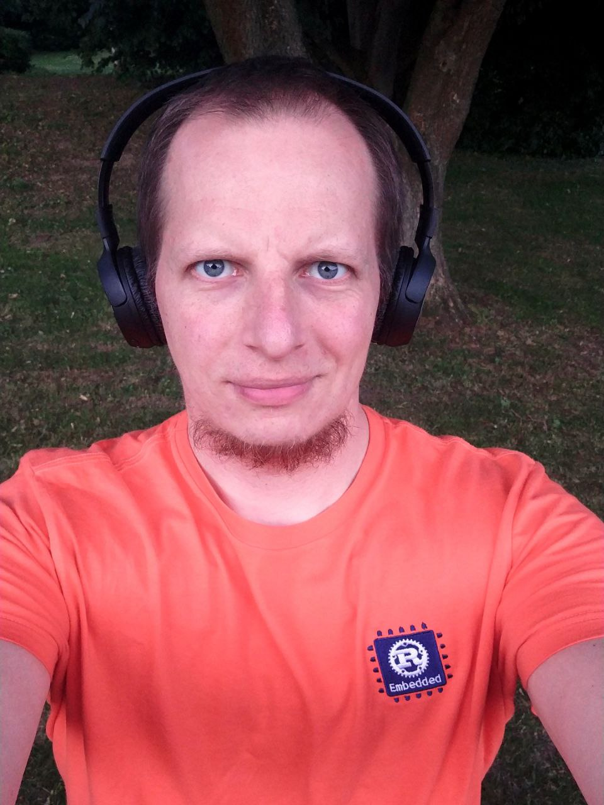

Hi, I'm Dan!
Profile
I am a software engineer with more than a decade of experience working on web and mobile applications, infrastructure, and systems. My main languages are Rust and JavaScript/TypeScript. Check out my curriculum vitae for more details. :)
In my free time, I like to hack on various kinds of software, especially operating systems and distributions as well as bringup and application firmware, with a focus on tooling, integration, and documentation.
Projects
I created Fiedka, the firmware editor, and started the Platform System Interface project to build many tools and derive a specification for hardware platforms and their interfaces with operating systems.
In addition, I am a RISC-V Ambassador, contribute to the LinuxBoot project, and drive the development of oreboot, which is platform initialization firmware written in Rust.
Public
You can find me publicly discussing and documenting interesting things on Mastodon, or sometimes watch me develop software live on Twitch, archived on my YouTube channel. I also like giving talks and workshops.